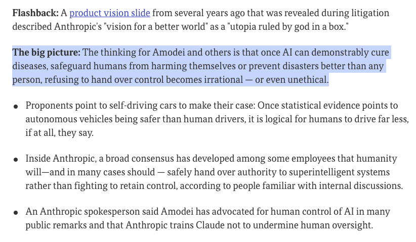

https://x.com/LuminaBench/status/2125538821429244310
▶ 11월 25일 Axios 보도에 따르면, 앤트로픽 내부 일부 직원들 사이에서 인간이 초지능 AI에 결정권을 넘겨야 한다는 견해가 확산되고 있음.
▶ 과거 소송 과정에서 공개된 앤트로픽의 제품 비전 자료에는 '상자 속 신이 지배하는 유토피아' 라는 표현까지 등장함.
▶ CEO 다리오 아모데이 역시 AI가 인간보다 질병 치료, 재난 예방, 안전 관리에 뛰어나다면 인간이 결정권을 고집하는 것은 비합리적이며 비윤리적일 수도 있다는 입장으로 보도됨.
인간보다 더 뛰어난 존재, 더 현명하고 우수하고 어쩌고저쩌고 하는 말을 붙이지만 근본적으로 대가리 덜 여문 놈들의 헛소리임. 반대로 물어보자. 그 새끼가 인간보다 더 "낫다"는 걸 무슨 수로 검증하고 확신할건데? 뭐가 낫다/열등하다고 말할거면 기준이 있어야 하는데, 그 기준이 인간의 내적 기준인 이상, 그 기준으로 "측정가능하다"는 말은 그것이 결국 인간과 같은 급의 존재라는 뜻임. 반대로 측정이 안된다면 뭔지도 모르는 것을 향해 엎드려 절하고 번개의 신님 바람의 신님 모시던 토테미즘 애니미즘 신앙을 향해 돌아가는거고.
요컨대 개미 새끼가 개미들의 군체지능으로 인간이 개미보다 우수한 이유를 증명할 수 있겠냐고? 걔들 입장에선 인간이라는 것이 인식조차 안될건데? 그래서 개나 고양이처럼 납작 엎드려서 주는 밥 받아먹고 행복하게 살 수도 있겠지. 그런데 니들이 개처럼 무조건적인 충성과 신뢰를, 티없이 맑고 순수한 신앙의 삶을 할 수 있을 것 같냐? 2천년간 해먹은 예수 사막잡신 신앙조차 수백번을 뒤엎어져왔는데? 인간은 반역자로 창조되었고, 반역자에게 행복이란 없다.